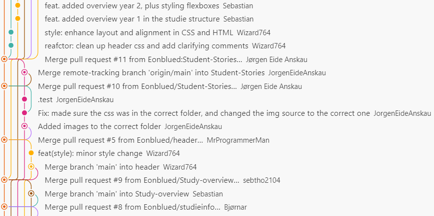
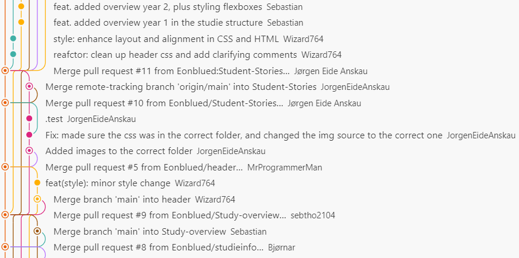

GitHub Usage
When working with software development, scripting, markup design or other development projects, it's important to use a tool to manage the cooperation process. Git has for years been, and is still, the industry standard tool for this purpose.
We've hosted our source code on GitHub and made heavy use of branching to divide up the work properly between.
Using Git in a collaborative project is a great way to track changes and manage collaboration, but it also comes with it's fair share of challenges. This is especially true when you're not that used to using git, it can be a bit daunting to learn.
Throughout this project, we've had to deal with merge conflicts, reverting commits, and mismatching local and remote files.
All things considered, we're very happy with how using git has worked out in this project, and how it has allowed us to simultaneously implement features that modify the same files (relatively) smoothly. Below you can see and read about some of the things we've had to deal with while developing this webpage.
Extract 1: Git was invaluable for fixing issues early.

In the above picture, you can see an extract from our git history. It shows the complete history of a feature branch "studieOppbygging" from start to finish.
The branch in question is shown as a yellow line, with a series of commits, including one that has been highlighted with a darker color. At the very bottom of the image you you can see where the branch was created(circled in red) from main(the blue line at the left of the image). The creator of the branch made a few commits, and then set up a pull request to merge the branch back into main. This has been our workflow for most changes made to the project. As there were merge conflicts, the commit immidiately before the highlighted commit shows the merge of main into the feature branch to make it compatible with main.
As per policy, several team members review all pull requests to main before they are merged. A reviewer noticed some problems introduced by the merge commit and attempted to fix them in the highlighted commit "Reverted some bad changes" (NOT a git revert). Upon this change, the pull request was reviewed again and a different reviewer discovered that the highlighted commit introduced a different problem. As such, the following commit is a revert that undoes these changes.
After this, some minor fix commits where added adressing the original issue in the merge from main to feature. Again, the feature branch received another merge commit from main for some intermidiary changes. Finally, the pull request was approved and the feature branch was merged into main and deleted.
 
